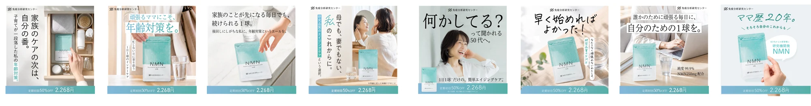
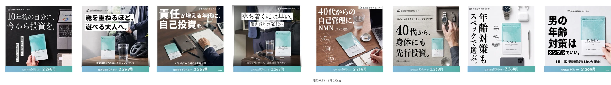
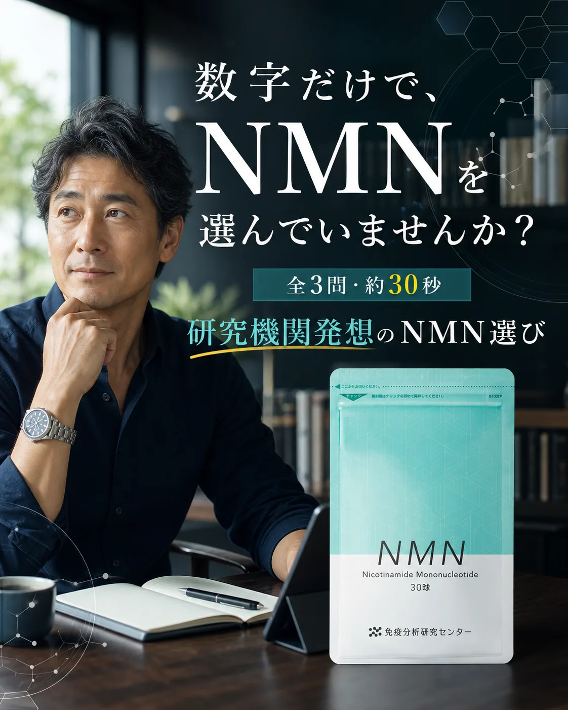
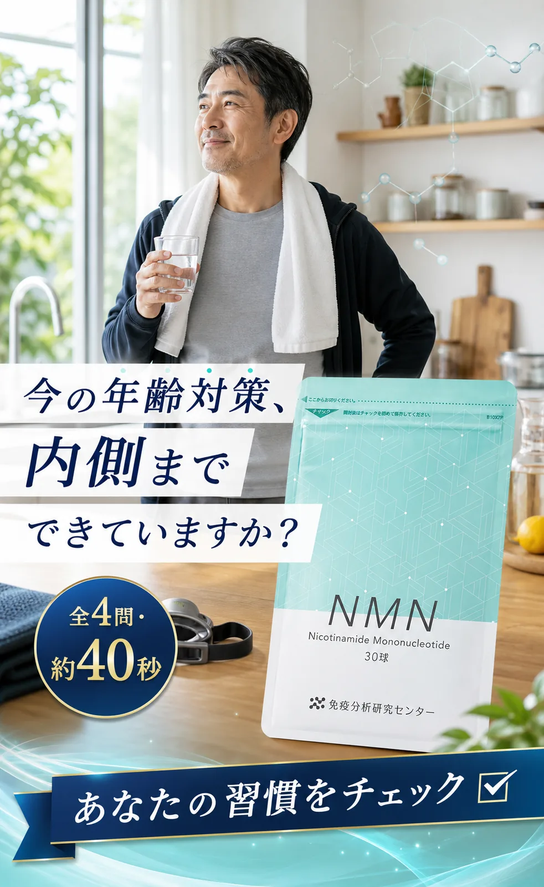
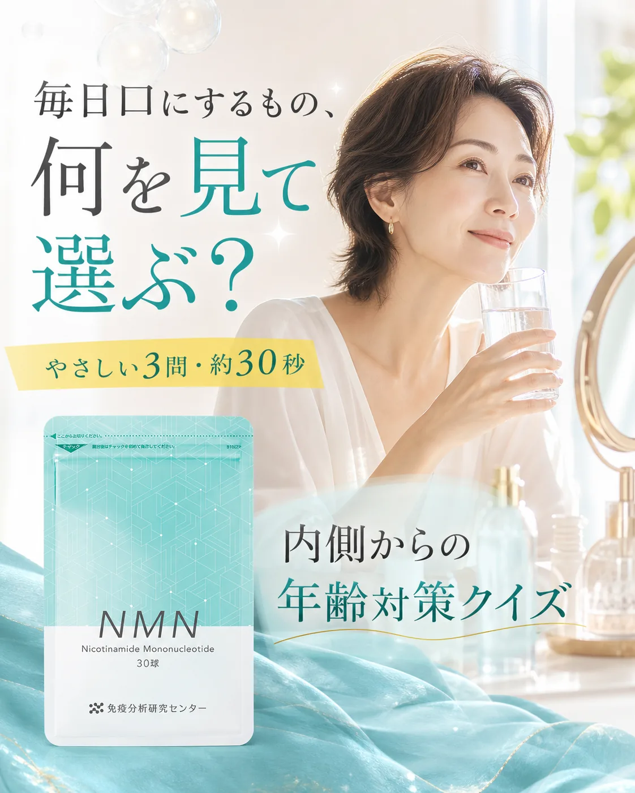
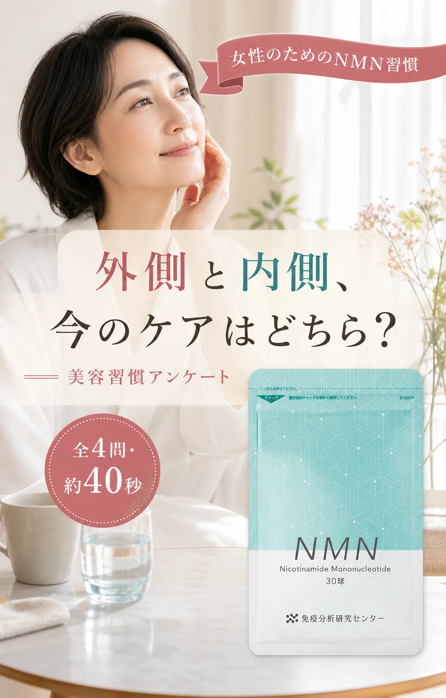

添付画像・上段｜女性向けバナー 8案家族優先／自分のための1球／美容・年齢対策

女性バナー群
→
記事E_女性傾斜
A：記事LP ／ B：年齢対策アンケート
A：記事LP ／ B：年齢対策アンケート
インナーエイジングケア※を記事の最初から提示し、NMNの選び方へ自然につなぐ遷移モックです。遠い生活文脈で引っ張らず、短い口語文と回答体験で商品理解まで運びます。
※年齢に応じた栄養ケアのこと上段の女性バナー群は記事E、下段の男性バナー群は記事Dへ。各ターゲットで、読み切る記事LPと回答型アンケートLPを比較します。


女性は美容・自分ケア、男性は自己投資・スペックの言葉を記事冒頭で継続。
記事LPは画像内コピーで連続。アンケートLPは回答→解説→次問で進みます。
共感、研究姿勢、純度、250mg・1球、シンプル設計、製造品質から商品LPへ。
男性／女性それぞれで、流して読める記事LPと回答型アンケートLPを比較できます。

設問を挟まず、研究・品質・継続設計を記事の流れで理解します。

生活に近い回答から始め、外側だけではない栄養ケアへ自然につなぎます。

設問を挟まず、外側から内側のケアへ自然につながる記事構成です。

正解を求めず、今の価値観を選ぶたびに次の設問と研究ポイントが続きます。
同じターゲット内でバナー・商品LP・オファーを固定し、記事LPとアンケートLPを比較できます。
| 固定する条件 | A：記事LP | B：アンケートLP | 比較指標 |
|---|---|---|---|
| 同一バナー／配信面／商品LP | 画像とコピーで流読 | 生活・価値観に回答 | 記事FV到達率 |
| 同一オファー／CTA文言 | 研究・品質を順番に理解 | 回答直後に解説を確認 | 読了率／回答完答率 |
| 同一の研究・品質情報 | 合理的な納得を形成 | 自分ごと化から納得へ | 商品LP遷移率・CVR |
format=quiz は既存計測互換のため記事LP導線として維持します。